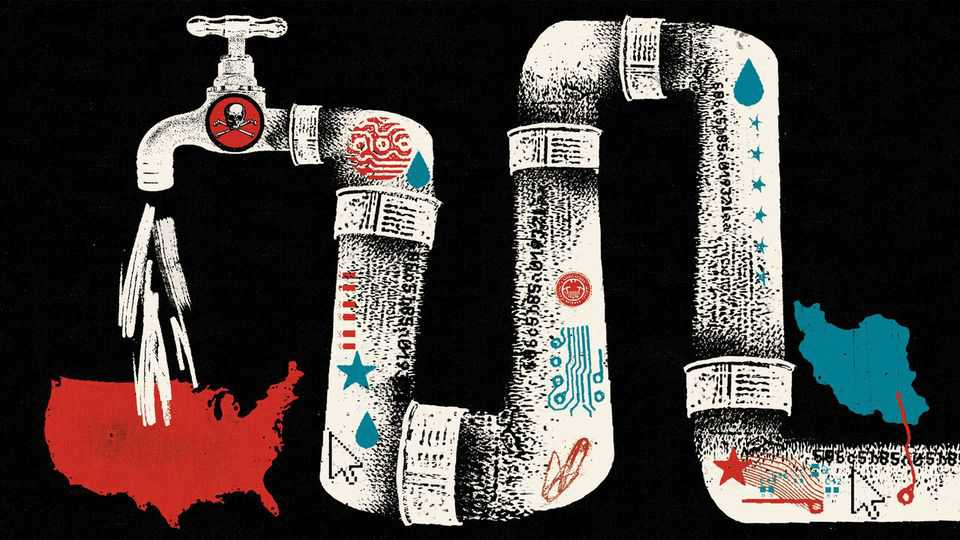

Why the world’s richest country can’t defend vital infrastructure
Washington continues to move more slowly than hackers

Aug 20th 2026
WATER IS A strategic vulnerability, a fact that is not news to military commanders. When the Ostrogoths wanted to cripple Rome in 537, they destroyed its aqueducts. More recently, water infrastructure has been an important target in America’s conflict with Iran, despite international laws classifying such attacks as potential war crimes. In March Donald Trump threatened to “completely obliterate…possibly all” of Iran’s desalination facilities, which are essential to life in the country’s arid southern provinces. Iran says that one such facility was bombed on Qeshm island. Bahrain, Kuwait and the United Arab Emirates have had their own water plants struck by missiles, presumed to have come from Iran.
It was therefore noteworthy, but should have come as no surprise, when America’s own water facilities came under attack this summer. On July 27th Maple Plain, near Minneapolis, declared an emergency. That same day the Clayton County Water Authority in Georgia, which serves 300,000 people south of Atlanta, asked customers to boil their water after a drop in pressure caused disruption. In all, hackers wormed their way into water and waste-water facilities in at least seven American states; some reports suggest more than 12. Minnesota was hardest hit, with 30 community water systems affected. American officials’ early assessments suggest that groups affiliated with Iran are responsible.
Hacks can disrupt water supply and make water unsafe to drink, though none of the recent attacks is thought to have done so. The question is whether politicians will, at last, move to deter hackers before their next big onslaught. On August 13th Amy Klobuchar and Adam Schiff, a pair of Democratic senators, introduced the Water Cyber Shield Act, which includes more power for the Environmental Protection Agency (EPA). But on August 19th federal officials had already issued a new warning: hackers were trying to breach Siemens devices used in water facilities and other critical infrastructure.
As the latest attack proves, water plants are not the only form of infrastructure under threat, but they are particularly easy to infiltrate. The electricity grid must meet cyber-security standards overseen by the Federal Energy Regulatory Commission. But no requirements exist for water. The electricity utilities that operate power plants are also larger, better funded and more tightly regulated than water operators: the biggest investor-owned utilities, such as PG&E in California and Duke Energy in the south-east and Midwest, supply power to millions of households.
Water—heavy and expensive to move—is more localised. About 90% of utilities, mostly owned by local governments, serve fewer than 10,000 people each. That means each has less money to harden their often obsolete computer systems. Indeed, water infrastructure had already shown itself ill-equipped to fend off attacks. Iranian hackers broke into the control systems of a small dam in New York in 2013, in an incident which went unreported for almost three years, and in 2023 seized a pump at a water plant in Pennsylvania.
Iran’s hackers are prolific; on August 18th federal prosecutors charged 17 Iranians with attacking the systems of universities and companies to steal research and intellectual property. A sprawling Chinese campaign, known as Volt Typhoon, has sought to burrow into American critical infrastructure to prepare for sabotage.
But those with less skill can break in, too. In 2019 a former water-district employee in Kansas used his old credentials to log on to an application that shut down cleaning procedures. (He claimed he was drunk which, if true, would offer further evidence that water is an easy target.) Two years later hackers took control of a water facility in Oldsmar, Florida, and attempted to poison residents by increasing the levels of sodium hydroxide, an ingredient in drain cleaner. That failed, but they were able to infiltrate the system easily, because an operator’s machine was running TeamViewer, a popular corporate tool that allows remote access to machines for IT support.
The latest intrusions were relatively simple. Hackers breached the “operational-technology” systems that serve as the interface between a computer network and a physical system. That required little wizardry: such systems are often connected to the public-facing internet, via mobile networks, and use weak credentials, if any. On July 30th, then again on August 19th, federal officials pleaded with operators to disconnect critical systems from the internet.
Earlier efforts to impose cyber-security standards on this patchwork have largely failed. During the Biden administration the EPA sought to compel states to review and report cyber-threats to water systems. The Republican state attorneys-general in Missouri, Arkansas and Iowa, joined by the American Water Works Association (AWWA) and the National Rural Water Association (NRWA), a pair of industry groups, sued, citing federal overreach. After a federal court issued a stay on the EPA’s effort, the agency pulled back.
When Congress has acted, measures have been minimal and slow to take effect. The Cyber Incident Reporting for Critical Infrastructure Act was passed in 2022, obliging organisations in important sectors to report major cyber-attacks within 72 hours. Its rules are due to be finalised in September, more than four years on.
There may now be momentum to do more. This month DEF CON Franklin, a group of civic-minded hackers, teamed up with the NRWA to launch the Water Watch Centre, an initiative to provide private-sector cyber-security support to small utilities. Ms Klobuchar’s and Mr Schiff’s bill is not the only proposal under consideration.
On August 5th the AWWA, which resisted the Biden administration’s proposals, endorsed the Water Risk and Resilience Organisation Establishment Act, sponsored by Rick Crawford, a Republican congressman from Arkansas. That bill would create an independent body to draft minimum cyber-security standards, under the EPA’s oversight, in a mirror of the requirement for electric utilities. The same day Tom Cotton, a Republican senator, wrote to Scott Bessent, the treasury secretary, urging changes to the tax code and other regulatory tweaks to encourage water plants to invest in better security.
Whether Washington moves swiftly depends in no small part on Mr Trump. The president’s proposed budget, which the Senate will take up in September, would increase the budget for the Department of War by 44%, to $1.5trn. That includes money for the Iran war and a high-tech “Golden Dome”, to shield America from missiles. He has shown less interest in defending American water.
His budget would cut the EPA’s biggest source of funds for water cyber-security by almost 90%. In July he suggested that fault for Minnesota’s attack lay with Tim Walz, the “corrupt” governor of the state—and that there had not been an Iranian attack at all. “Iran’s got bigger problems than worrying about Minnesota,” he offered. The Cybersecurity and Infrastructure Security Agency, the main federal body tasked with cyber-defence, is in disarray, with leadership turmoil, low morale and a one-third cut in staff since Mr Trump returned to the White House. The Senate may push him to do more after it returns from recess. Hackers are not waiting.■
Stay on top of American politics with The US in brief, our daily newsletter with fast analysis of the most important political news, and Checks and Balance, a weekly note that examines the state of American democracy and the issues that matter to voters.